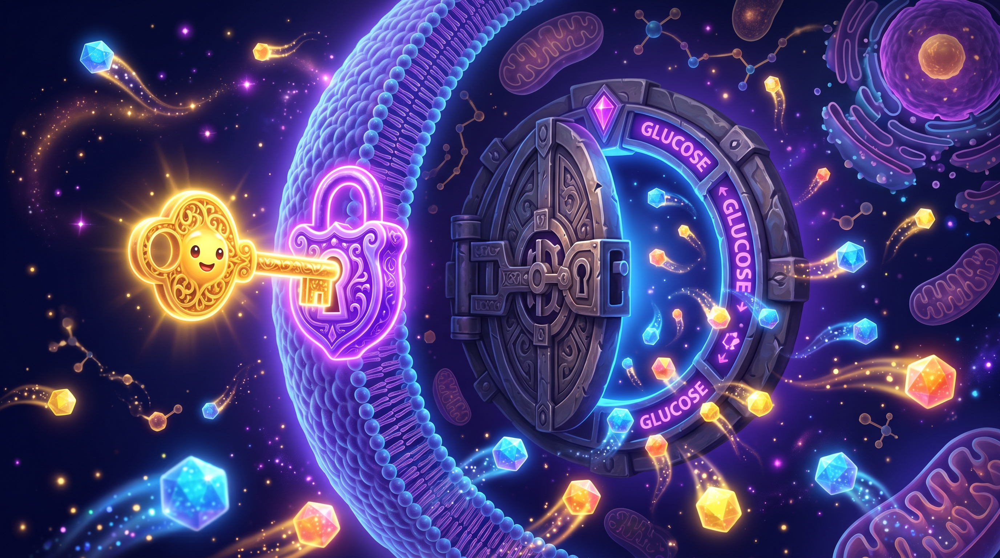
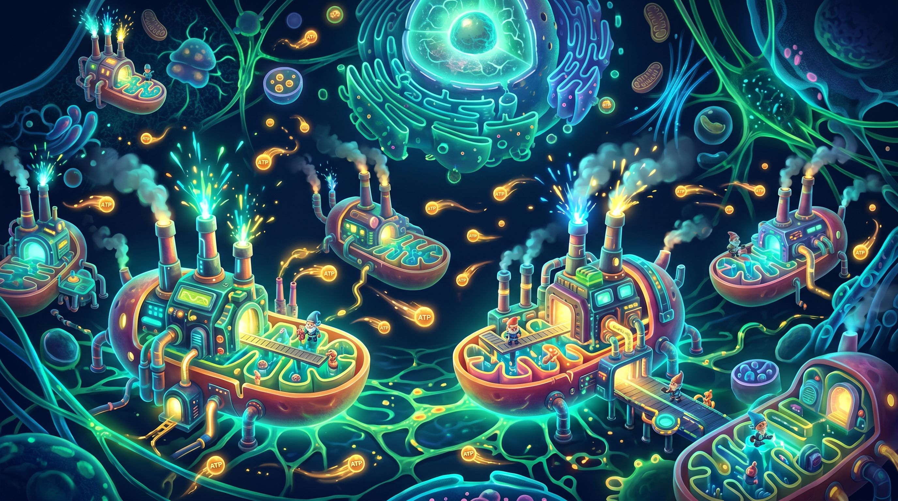
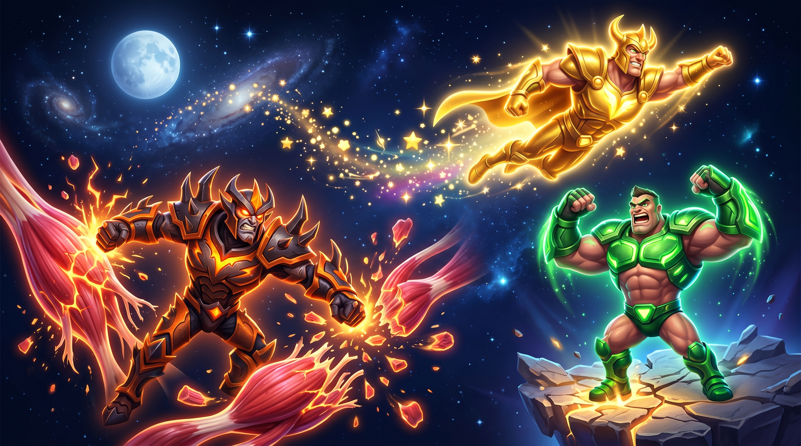
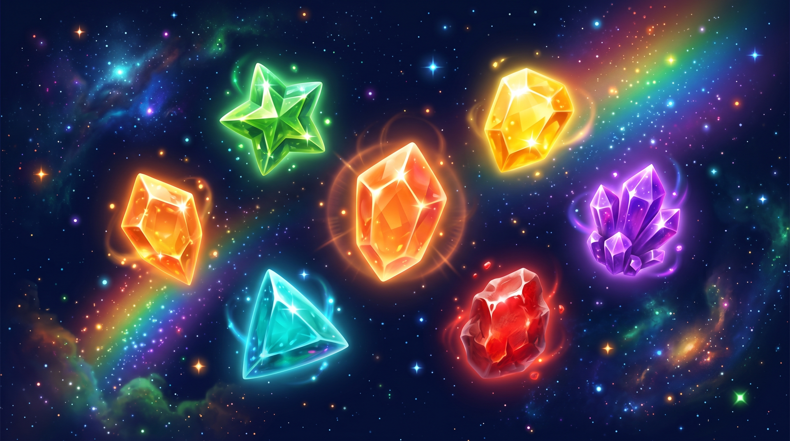
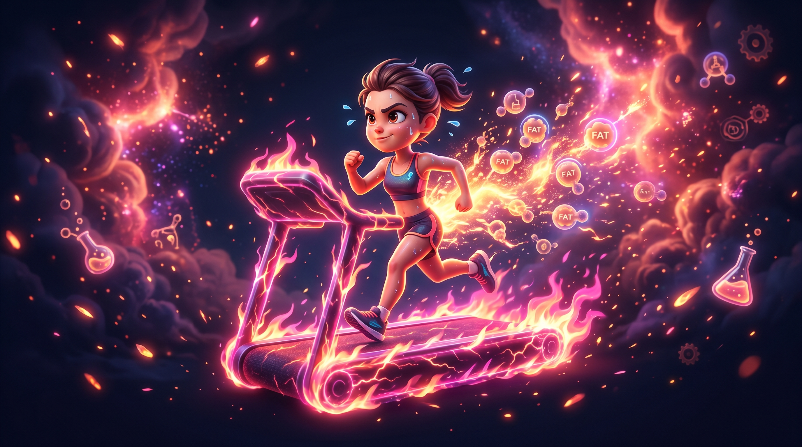

Insuline, mitochondries, hormones — le vrai manuel de ton corps. Basé sur la science, pas les influenceurs.
L'hormone qui décide si tu brûles de la graisse ou si tu en stockes. Tout part de là.

Chaque fois que tu manges, ton pancréas sécrète de l'insuline. Son job : ouvrir les "portes" de tes cellules pour que le glucose rentre et serve d'énergie.
Le problème : quand tu manges trop souvent des glucides rapides (pain, pâtes, gâteaux, sodas), ces portes s'abîment progressivement. C'est la résistance à l'insuline. Résultat : 50% du glucose ne rentre plus dans les cellules et se convertit directement en graisse.
Et même si tu manges peu de calories, ton corps continue de stocker. C'est pour ça que "manger moins" seul ne marche pas. L'hormonal prime toujours sur les calories.
Croire que le problème c'est "les calories". Si ton insuline est chroniquement élevée, tu stockes de la graisse même en déficit calorique. L'hormonal prime toujours. Tous les influenceurs qui ne parlent que de calories = incomplets.
Tes centrales nucléaires. 100 millions de milliards dans ton corps. Si elles foutent le camp, tu brûles 4x moins de graisse.

Les mitochondries prennent ce que tu manges, le mélangent avec l'oxygène, et fabriquent de l'énergie (ATP). Elles produisent 95% de toute ton énergie.
Problème : elles rejettent des radicaux libres comme déchets. Ces radicaux restent bloqués à l'intérieur et les abîment progressivement. Une mitochondrie abîmée ne peut plus transformer l'énergie efficacement → ton corps stocke plus de graisse.
Avec l'âge, les dommages s'accumulent. C'est pour ça qu'à 45 ans tu brûles moins de graisse qu'à 25, même en mangeant pareil.
Après 16h de jeûne, ton corps active un processus de nettoyage : il repère les mitochondries abîmées, les enrobe dans une membrane et les digère. C'est le seul moyen de s'en débarrasser. Pas de complément. Pas de pilule. Juste ne pas manger pendant 16h.
Le tableau de bord invisible. HGH, cortisol, testostérone — ces 3 décident entièrement de ta transformation.

Finir de manger 3-4h avant de dormir. Repas du soir = protéines + légumes, zéro glucides élevés.
30g glucides + 10g protéines, 30min avant la séance. L'insuline monte légèrement → bloque le cortisol.
Perdre la graisse en priorité. Quand elle baisse, l'aromatase baisse, la testostérone remonte naturellement.
Ce n'est pas que "quoi manger". C'est surtout quand tu manges. Le timing change tout au résultat.
Le matin : Continue le jeûne. Insuline basse = lipolyse (brûlage de graisse) maximale. Un petit-déj sucré bloque 3-4h de brûlage immédiatement.
Autour de l'entraînement : C'est le seul moment où les glucides sont vraiment utiles. Pré-séance : 30g glucides + 10g protéines. Post-séance : glucides + 30g protéines obligatoires (active le mTOR pour la construction musculaire).
Le soir : Protéines + légumes + patate douce max. Zéro pâtes, pain, riz blanc. L'insuline doit être basse au coucher pour que l'hormone de croissance travaille toute la nuit.
| ❌ Éviter (insuline haute) | ✅ Privilégier |
|---|---|
| Pain blanc / pain complet / pâtes | Patate douce, riz complet (post-training seulement) |
| Gâteaux, céréales, biscuits | Légumes verts (épinards, brocoli, courgettes) |
| Sodas, jus de fruits | Œufs entiers + blancs d'œufs |
| Fast-food, fritures, huile chauffée | Poisson gras (saumon, maquereau) 2x/semaine |
| Plus de 2 fruits/jour (fructose) | Poulet, viande maigre, fromage blanc |
| Alcool | Huile d'olive crue — jamais chauffée |
Les influenceurs disent 2g/kg de poids total. C'est faux. C'est par kg de masse musculaire, pas de poids total. Pour 78kg avec du surpoids, 1,2-1,5g/kg suffit (≈95-115g/jour). Au-delà, les protéines se convertissent en glucose puis en graisse.
Les briques invisibles. Tout se trouve dans la vraie nourriture. Zéro complément nécessaire si tu manges correctement.

Peau, cheveux, immunité, cicatrisation. 100g carottes = 95% de tes besoins. Une carotte par jour.
CRITIQUE. Fabrique les briques de l'ADN. Carence = mutations génétiques = risque cancer. 200g épinards + 200g lentilles = couvert.
Sans elle, le collagène ne se fixe pas. Peau qui s'affaisse, tendons fragiles. 100g poivron rouge = 150% des besoins.
Fixe le calcium dans les os. Sans elle = ostéoporose. 100g épinards = 400% des besoins quotidiens.
Transport de l'oxygène. Carence = fatigue chronique, essoufflement. 3 œufs + 200g bœuf + épinards = 15mg/jour.
Sommeil profond, récupération, crampes. 400mg/jour. Épinards + amandes + chocolat noir 85% = done.
Os, rythme cardiaque, contraction musculaire. 1g/jour. Lait + fromage + sardines + yaourt = 1g.
Cœur, pression artérielle, muscles. 3,5g/jour. Patate douce + épinards + banane + avocat = couvert.
Cerveau, cœur, hormones, vision. Ton corps ne peut pas le fabriquer. 2x/semaine poisson gras = résolu.
Tu en as trop, pas trop peu. Max 2g/jour. Les aliments transformés t'en donnent 5-6g en secret.
Acide phosphorique dans sodas + pain industriel = excès = bloque le calcium = os fragiles. Fuis les sodas.
5-10g/jour AVEC vitamine C. Sans vit C = ne se fixe pas = inutile. Vérifie toujours la composition.
Épinards quotidiens + poisson 2x/semaine + œufs chaque jour + légumes colorés + quelques noix. Zéro complément nécessaire si tu manges varié et non-transformé.
La science exacte du cardio. Faire du sport n'importe comment = brûler du glucose, pas de la graisse. Voilà la méthode.

La lipolyse (brûlage de graisse) ne démarre que quand l'insuline est basse. Si ton insuline est élevée = système de brûlage désactivé, peu importe l'intensité de ton effort.
Intensité optimale : 130 pulsations/minute (modéré — tu peux parler pendant l'effort). À cette intensité, ton corps tire directement dans les graisses. Au-delà → il tape dans le glucose puis dans les muscles.
| ❌ Mauvaise méthode | ✅ Bonne méthode |
|---|---|
| Manger 1h avant le cardio | Cardio à jeûn (16h+ de jeûne) |
| Manger immédiatement après | Attendre 1h30 après le cardio |
| Intensité HIIT (180 puls/min) | 130 pulsations/min (modéré) |
| Résultat : ~15g graisse brûlée | Résultat : ~65g graisse brûlée |
Ce que les influenceurs et l'industrie te cachent. Les erreurs qui t'empêchent d'avancer depuis des années.
Perte lente (0,5-1kg/semaine), habitudes à vie, pas de régime express. Sinon tu reviens encore plus gros.
L'OMAD peut être excellent (20h+ de jeûne = autophagie maximale). Mais pas n'importe comment. 1 burger fast-food + frites + soda = radicaux libres massifs + zéro vitamines. L'OMAD bien fait : poulet ou poisson + grande salade + légumes variés. 1300 calories de vraie nourriture = magnifique pour la santé.
45 ans, 1m62, 78kg. Objectif : 65kg durable puis construction musculaire. Plan en 3 phases.
Les influenceurs qui ne parlent que de calories sautent les 3 niveaux en dessous.
Total : ~1550 calories · Jeûne 16h · Cardio à jeûn · Insuline basse le soir
Semaines 1-2 : -1 à 2kg (eau + glycogène libéré). Semaines 3-12 : -0,5 à 1kg de graisse par semaine. En 3 mois : -6 à 12kg durablement. Ce n'est pas un régime — c'est la reprogrammation de ton métabolisme. Après 3 mois, le corps sait brûler la graisse naturellement. C'est pour ça que ça tient à vie.